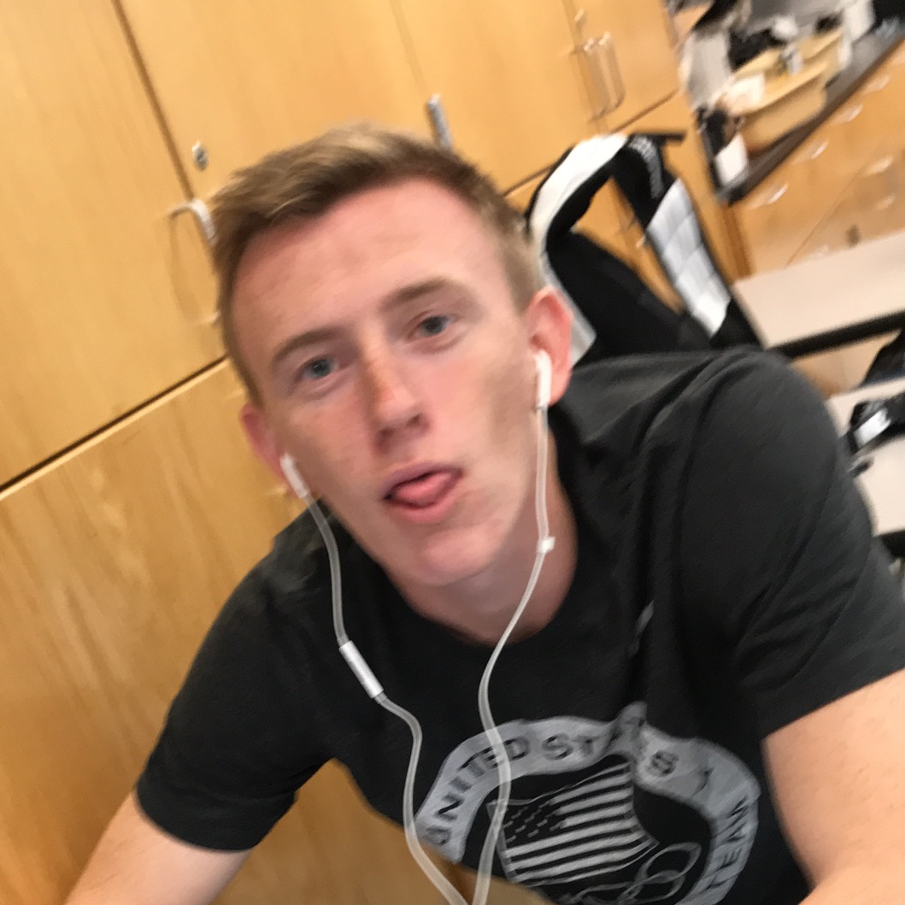

Team of the Week
- Fantasy Points41.48
- Passing Yards462
- Pass TDs5

Adam Kahler's Njigba's in Paris scored 193.68, the highest total of the 2026 season by 13.92 points over Zack Rollis's 179.76 in Week 4, and the best weekly score of Kahler's career, topping the 189.26 he posted in Week 14 of 2024. Joe Burrow set the tone with 41.48 points on 462 passing yards, five touchdown passes and a rushing touchdown in Cincinnati's overtime win over Tennessee (he also threw three interceptions). Jaxon Smith-Njigba (27.8), Braelon Allen (25.3), Bucky Irving (23.0, on 170 rushing yards) and Trey McBride (20.2) chipped in, and those five alone make up 137.78 of the total.
Incredibly, it could have been even bigger. Tyler Allgeier scored 43.1 points on Kahler's bench, the highest individual score in the entire league, on 191 yards from scrimmage and two touchdowns for Arizona. Njigba's in Paris left 73.1 points on the bench, and it still beat Austin Gauss's Puka Bites Back by 84.50 to improve to 7-1 and take sole possession of first place, a game clear of Zay it with Flowers, Puka Bites Back and Geezers n' Beaters.
Week 8 Results
Most Wanted
Chug Clause Violators — League Rule, Sec. "Other"



Most Valuable Players
Started for Njigba's in Paris and led the league with 41.48 points in Cincinnati's overtime win over Tennessee, despite three interceptions. His 41.48 was the highest score by any starter in the league.
Started for Austin Gauss's Puka Bites Back and scored the second-most points of any starter in the league with two touchdowns, but it wasn't enough in an 84.50-point loss to Njigba's in Paris, the biggest margin of Week 8.
Started for Love Her Big Judkins and scored 33.1 points. With Tony Pollard adding 32.7 on more than 20 carries for 115 yards and multiple rushing touchdowns, Jack Callahan's team scored 145.96 to beat Costa Rico by 52.68 and win its third game.
Started for Gibbs Me Shelter and scored 31.9 points, with Brock Bowers (28.2) and Jahmyr Gibbs (26.8) adding 55.0 more. The three starters account for 86.9 of Evan Lamb's 153.70, a 39.90-point win over Uncle Lamb's that moved Gibbs Me Shelter to 4-4.
Started in the flex for Ben Schon's White Men Can't Jump and scored 28.8 points, carrying a 112.90 total that edged Zay it with Flowers by 16.02 for just the second win of the season.
Injury Recap
Lamar Jackson
Jackson hurt his throwing hand on Baltimore's first offensive play against Buffalo and did not return. He is having surgery and has been placed on injured reserve, leaving Beachnau without his quarterback for the foreseeable future. Tyler Huntley later left with a toe injury, too.
Jeremiyah Love
Love left Arizona's win with an ankle injury, his second in a short span, after nine carries, scoring 2.3 points in the flex. His status was unclear, but ESPN reported he might be questionable for Week 9.
Emeka Egbuka
Egbuka was ruled out after not practicing on Friday and scored 0.0, handing Hurlburt a chug (see Most Wanted). He was also inactive the week before.
DJ Moore
Moore picked up a knee injury but scored 16.6 points in Buffalo's win over Baltimore and said afterward that it isn't serious, though his status will be worth monitoring.
Breece Hall
Hall was listed questionable with a quad injury on Friday after a limited week of practice and scored 0.0 on Zack Rollis's bench.